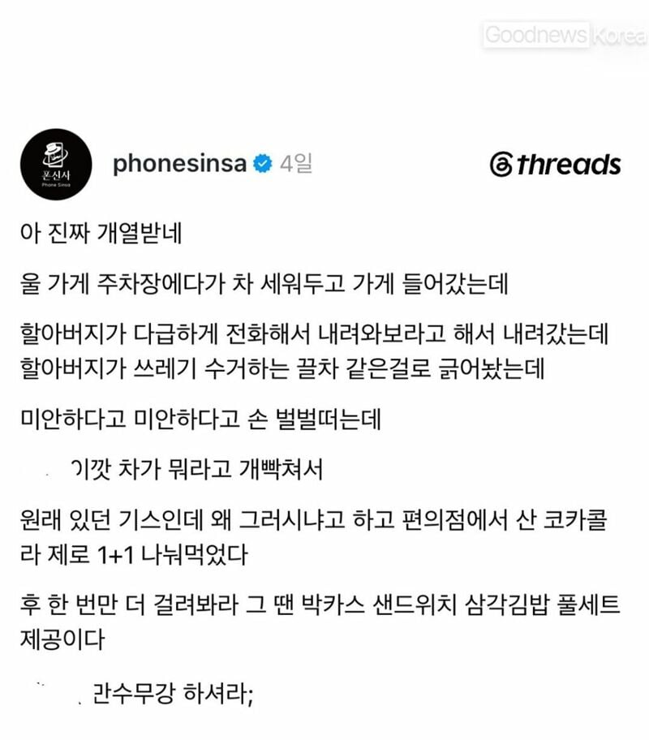
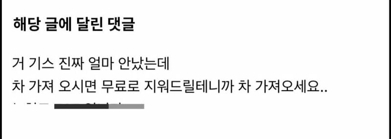
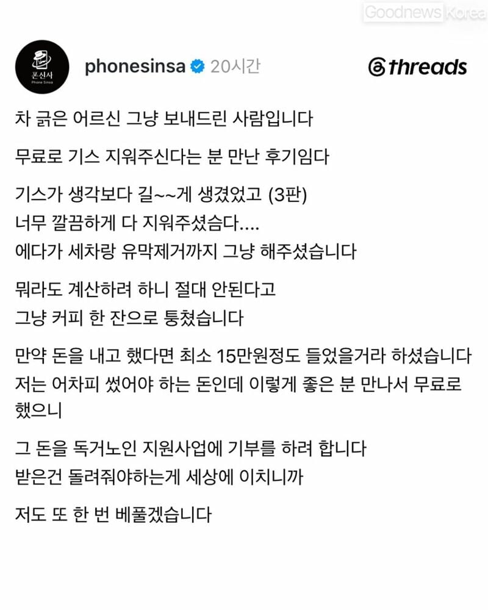

201 · 11 · 20 시간 전 · 원문



수집 당시 댓글 11개
공구리제왕 · 14 시간 전
마음이 이쁜데 또 뜨거운 사람이네. ㅈ간지다.
더블대시 · 13 시간 전
선순환 좋다
자갈치시장자갈치 · 13 시간 전
왜 기스 제거 제품 홍보 아님?
보노본호 · 13 시간 전
쓰레드를 믿냐 ㅋ
↳ 답글 · 서문청 · 11 시간 전
쓰레드를 믿기vs방구석 개붕이를 믿기
↳ 답글 · 개드립콘쓸때만로그인함 · 9 시간 전
내가 임신했네 개붕
참수맨 · 10 시간 전
난 주차장에서 티도 안나는 기스 냈는데 상대차주님께서 범퍼까지 싹 갈으셔서 보험 할증붙었는뎅ㅋㅋ
약빤 · 10 시간 전
기스 말고 흡집...
↳ 답글 · 구라치면화냄 · 7 시간 전
기스면 = 흠집면
호기건담 · 8 시간 전
이 착쁜넘아!
나는마산의이용찬이다 · 2 시간 전
이런거 많이많이 가져와라
마음이 이쁜데 또 뜨거운 사람이네. ㅈ간지다.